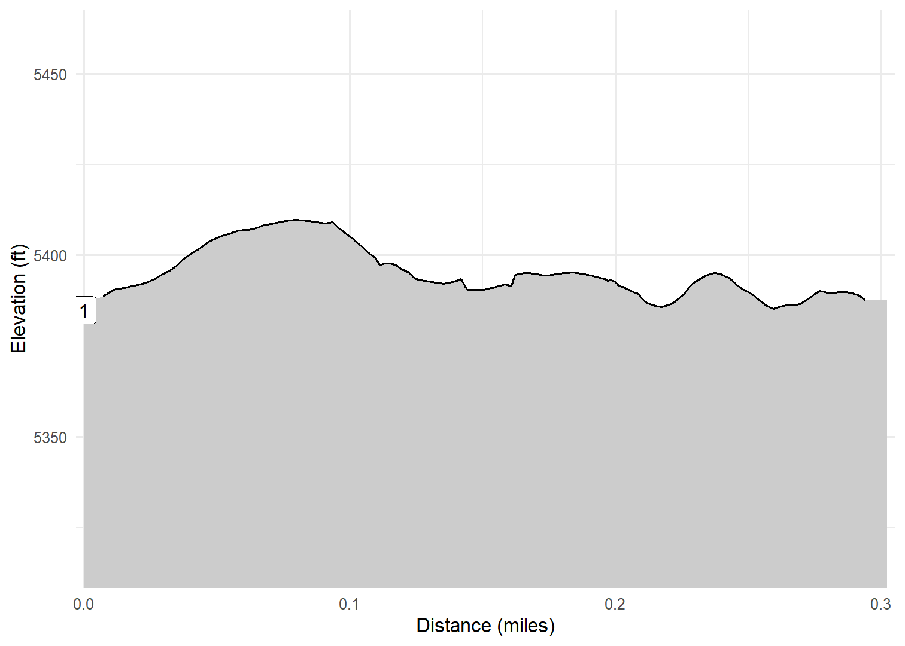

Puerco Pueblo Trail
Petrified Forest National Park, AZ
On February 21, 2023 Kim and I visited Petrified Forest National Park on our way to Arizona. After the Painted Desert Rim Trail we stopped at the Puerco Pueblo Trail. It was interesting to see the “ruins” of this ancient community. Our next stop was the Blue Mesa Trail.
Walk-Specific Map
Elevation Profile

Images

PRCO01: Puerco Pueblo ruins

PRCO01: Puerco Pueblo ruins

PRCO01: Petroglyphs

PRCO01: Puerco Pueblo ruins

PRCO01: Puerco Pueblo ruins
GPX Download
A sanitized GPX file of our hike is here.
Summary Information
| NUM | trackID | Primary | Description | Distance | CumDist | DeltaElev |
|---|---|---|---|---|---|---|
| 1 | PRCO01 | Puerco Pueblo Tr | Parking area to parking area | 0.3 | 0.3 | 4 |